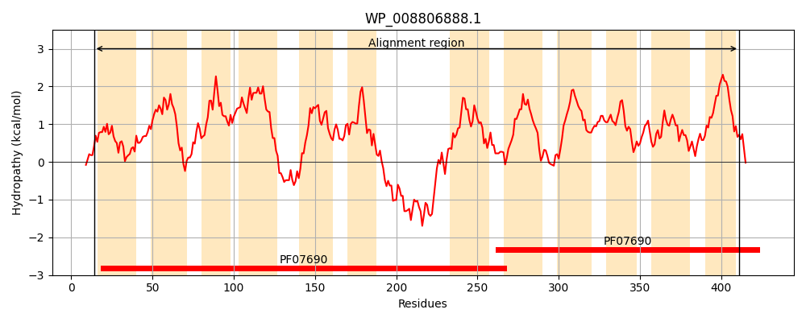
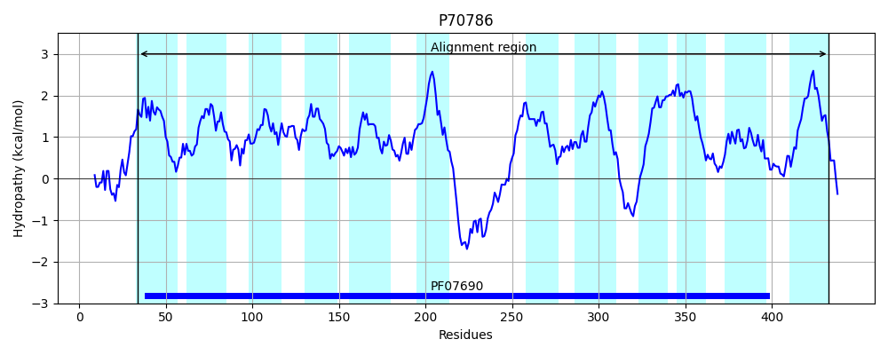
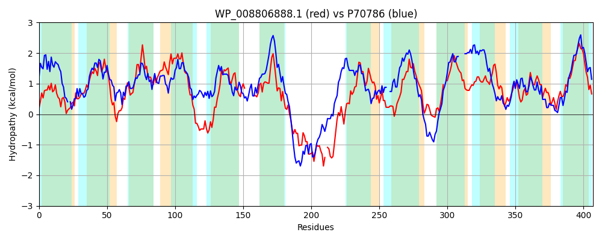

Hit Accession: P70786
Hit TCID: 2.A.1.14.3
Hit Description: gnl|BL_ORD_ID|11301 gnl|TC-DB|P70786|2.A.1.14.3 Putative tartrate transporter - Agrobacterium vitis.
Mach Len: 407
e:0.000000
Query TMS Count : 12
Hit TMS Count: 12
TMS-Overlap Score: 11.400000
Predicted Substrates:CHEBI:35396;tartrate
BLAST Alignment:
Score: 504 , Bit scores: 198 bits, E-value: 6.2e-59, Alignment length: 407, Percentage identity: 30
Query: 14 IMPIVFITYSLAYLDRANFSFASAAGITEDLGITKGISSLLGALFFLGYFFFQIPGAIYAERRSVRKLIFICLILWGGCASLTGVVHNIPALAAIRFILGVVEAAVMPAMLIYISNWFTKSERSRANTFLILGNPVTVLWMSVVSGYLIQAF------GWREMFIIEGVPAVIWAFCWWVLVKDKPSQVNWLAESEKAALQEQLDREQQGI-KAVRNYGEAFRSRNVILLCAQYFAWSIGVYGFVLWLPSIIRSGGENMGMVEVGWLSSVPYLAATIAMIVVSWASDKMQNRKLFVWP--LLLIGGLAFIGSWAVGANHFWVSYTLLVVAGAAMYAPYGPFFAIIPEMLPRNVAGGAMALINSMGALGSFCGSWFVGYLNGATGSPAASYIFMGVALFASVLLTLIV 411
I+P + + Y +A+LDR N FA A + +DLG + + + +FF+GYF F++P + + R I +I WG + L V + +RF+LGV EA P +++Y+S WF R+ + P++ + S +SG L++ GW+ MF+IE PA+I + D+P + WL E E+ L + ++ EQ G A + VI L YF S G+Y +W P II+ G + +EVG++++VP + A +AM++ + SD+ R V LL GLAF A GA ++ L + + P +++ L A +A INS+G LG F G +G++ TGS F+ L S +LTLI+
Sbjct: 34 IVPFIMLLYFIAFLDRVNIGFA-ALTMNQDLGFSSTVFGIGAGIFFVGYFLFEVPSNLILNKVGARIWIARVMITWGIVSGLMAFVQGTTSFYILRFLLGVAEAGFFPGIILYLSFWFPARRRAAVTALFMAAAPLSTVLGSPISGALMEMHGLMGLAGWQWMFLIEAAPALILGVVVLFFLTDRPEKAKWLTEEERNWLVKTMNAEQAGRGTASHSVMAGLADIRVIALALVYFGTSAGLYTLGIWAPQIIKQFG--LSAIEVGFINAVPGIFAVVAMVLWARHSDRTGERTWHVVGACLLAAAGLAF----AAGATSVFMVLIALTIVNVGISCSKPPLWSMPTMFLSGPAAAAGIATINSIGNLGGFVGPSMIGWIKDTTGSFTGGLYFVAGLLLISAILTLIL 433 | Protein Hydropathy Plots: |
|---|
|  |  |
Pairwise Alignment-Hydropathy Plot:
|
|---|
|  |